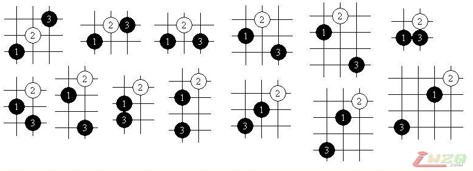

闲谈五子棋
#1 闲谈五子棋 作者：有志青年 发表时间：2007-6-11 12:42:34
主题帖说明：
此帖内容为屏蔽在个人博客中所发表文字，前后战线拉的很长，本帖集中转载。
#2 闲谈五子棋（1）——五子棋的起源 作者：有志青年 发表时间：2007-6-11 12:43:09
2007年04月14日 星期六 上午 08:58
关于五子棋的起源一向是众说纷纭。有说它起源于围棋，有说它逐渐发展成为围棋。如果五子棋和围棋真的有一定的关系的话，我实际偏向于后一种说法，因为五子棋本身就有围困对手限制发展的战术，而围棋在很大程度上并不认为连成一条直线（特别是斜线）的棋型会有多么大的优势。关于它的起源地，目前网上主要有两大类资料。一类是根据新井华石（日本人，九段）先生的著作中的叙述翻译过来的，没有具体说明其起源地，只是说比较有规模的游戏方式是经由朝鲜传入的（毕竟，如果只是摆石头那样简单的行为的话，任何地点都可能有人曾经“玩过五子棋”）。而另一版本，也就是国内流传较为广泛的资料，大体是说五子棋起源于中国，经过发展传入日本、朝鲜等地等等。当然，我在这里不想讨论民族意识的问题，既然无确切有力的证据可考，那么这个问题讨论不讨论其实皆可。幸好，目前还没有一个欧洲人站出来说五子棋起源于欧洲，给这一问题的讨论减去了不少的麻烦。
技术层面上，我认为五子棋最简单的行为在创立之初恐怕并没有什么太深的内涵。很可能就是有一个人摆石头玩，后来邀请另一个人和他一起玩，后来又邀请了一个——但是发现三个人太麻烦，于是这成为了两个人的游戏。他们开始摆成3个、4个一线，发现太简单、无聊，当他们开始摆5个一线的时候，忽然发现双方各有胜负，局面精妙无比，于是他们没有再去想探索6个石头一线的游戏。这样的事件在历史上可能出现过无数次，然而有一次——重要的一次——他们玩完一次游戏后，把这个游戏的方法介绍了出去，并传播开来，于是——五子棋诞生了。
#3 闲谈五子棋（2）——五子棋的历史 作者：有志青年 发表时间：2007-6-11 12:44:07
2007年04月14日 星期六 上午 09:00
尽管五子棋的起源有多种意见，但现代五子棋的历史却是世界各地都比较容易统一的。1899年，日本万朝报社的社长黑岩泪香先生（小说家、翻译家，当时的五子棋高手，即后来的高山互乐第一世永世名人）通过在全国范围内公开征名的方式将原始的五子棋游戏确定出了“连珠”这一新名称，取寓意为“日月如合壁，五星如连珠”。并开始了五子棋的改革——主要是为了平衡黑棋和白棋之间的先手优势而对黑棋做出的种种限制——当时即确定了黑白双方禁止走“三三”。之后五子棋运动在黑岩先生的领导下逐渐蓬勃发展了起来，并通过了一系列的规则改革使五子棋更加具有可玩性。于是五子棋的规模和影响逐渐在日本国内都逐渐超过了围棋和将棋。
但黑岩先生去世后，由于失去了统一领导者以及日本民族文化本身具有的派别思想，统一的全国五子棋运动开始逐渐分裂，第二次世界大战的爆发使五子棋的运动遭受了空前的灾难。二战之后，五子棋运动逐渐恢复，并开始举办一系列有规模、长期性的比赛，其中最著名的当属“全日本连珠名人战”。
20世纪八十年代初，连珠传入欧洲，1988年，国际连珠联盟在瑞典成立，并确定从次年（1989年）起每两年举办一次世界范围内最盛大的五子棋竞赛——连珠世界锦标赛。20世纪90年代初，连珠运动传入中国。于是逐渐形成了以中国、日本、欧洲三部分为主体的世界连珠格局，目前环太平洋地区的一些国家也已经开展了这项运动。1996年，连珠进行了最近的一次确定的规则改革——确定黑方指定开局，我们现在所接触到的连珠形式便基本形成了。
#4 闲谈五子棋（3）——五子棋的思想和文化 作者：有志青年 发表时间：2007-6-11 12:44:42
2007年04月22日 星期日 上午 10:19
通常来说，一项运动得以延续的原因，要么是因为有广泛的群众基础，要么是因为有其自身所蕴涵的思想文化。相对而言，大多数体力运动（比如足球、篮球等等）都比较偏重前者，而棋类运动虽然也可以依附于第一点而延续，却几乎无一例外地选择构建并形成自身的思想文化基础，或许是因为这样的脑力运动包含了对人类本身思想及文化的思考吧。
而对于五子棋而言，其思想当然是从这项游戏被发明的时候就逐渐发展并完善了，但第一次有人真正赋予其具体化的意义，还是在高山互乐先生提出的五子棋所象征的“仁、义、礼、智、信”，并推崇以取得此棋道者为胜。而与其他棋种相比较的话，五子棋的显著特征是不能吃子，于是它又有了和平的意味在其中，其实是包含了“限制”与“发展”两层含义。那么抽象一些来说，棋以取得棋道为最高境界，五子棋的棋道可以用一个“和”来表示，当然不是说每盘棋要以和棋结束才好，而是表示五子棋之和谐的思想，这也同样要求并促使棋手拥有一个淡定的心态。而五子棋本身所包含的精妙，以及形势瞬间逆转的可能性，则与我们的人生是相似的。笔者认为，围棋如世界，在浑厚而均一的变化中逐步发展；五子棋如人生，在瞬间与瞬间的变化之中前进。
#5 闲谈五子棋（4）——开始下五子棋 作者：有志青年 发表时间：2007-6-11 12:45:06
2007年04月22日 星期日 上午 11:47
对五子棋有了一个初步的了解后，我们要做的就是开始下棋——对，是开始下棋，而不是学习规则、学习开局、学习必胜等等。并不需要太多的准备，你需要的只是一副棋盘和黑白棋子（如果你没有，纸上画的也可以）。我在这里只是强调去下棋，先体会“连五”的基本概念，无需限制棋盘大小，无需限制规则等等——这些“妨害”你高高兴兴下棋的心情的东西就把它暂时忘掉好了！只有在积累了一定数量的“很随意的对局”之后，你会能思考对这个游戏进行一些有意义的改造——就像日本的前辈们在100多年前所做的一样。与此相反，我认为，一上来就对规则等等进行透彻的分析和学习，如果学得不是很完善的话，是很容易抑制棋友们下棋的积极性的，更麻烦的是会将五子棋的乐趣消磨掉，这是非常不好的！
当然，就像我以前所提到的，刚开始下棋时只有一点是需要你向真正的高手们学习的，那就是平和的心态与必胜的信心。
#6 闲谈五子棋（5）——五子棋的规则 作者：有志青年 发表时间：2007-6-11 12:46:28
2007年05月04日 星期五 下午 11:56
和其他的事情一样，当五子棋逐步走向专业化时，一系列问题便出现了，于是五子棋的规则也便应运而生，其目标就是增强五子棋的可玩性，吸引人们参与这项运动。在这里我没有足够的水平也不想论述过多，详细而无聊、冗长的说明可以参见励精教室：http://www.ljrenju.com.cn/rule/ruleindex.htm。我们所应该理解的是，规则对五子棋的影响，如何利用规则。
因为有了规则，五子棋变得比以前更加有趣。以后我将就规则中的各个方面在比较浅显的技术层面上做更加具体的说明。
#7 闲谈五子棋（6）——五子棋的开局 作者：有志青年 发表时间：2007-6-11 12:49:43
2007年05月12日 星期六 上午 10:48
我们这里所说的开局，具体是指一局棋的前5手。
按照目前的规定——第一手棋放在天元、第二手棋在周围8个点内选、第三手棋在5×5之内选择，总共构成了26种开局，如图所示：
直止部分——
上排左起：寒星局、溪月局、疏星局、花月局、残月局、雨月局、金星局；
下排左起：松月局、丘月局、新月局、瑞星局、山月局、游星局。
斜止部分：
上排左起：长星局、峡月局、恒星局、水月局、流星局、云月局；
下排左起：浦月局、岚月局、银月局、明星局、斜月局、名月局、彗星局；

这些开局的名称不过是个代号，方便交流而已。初学者大可不必在这上面花什么精力，棋下多了自然就知道了。还有开局诗啊、开局诗的注解啊、“星”“月”的命名方法啊、“桂”“间”“连”的分类啊，等等等等，无非就是让你别在开局时就晕头转向罢了。
作为基础的知识还是有必要了解：花月、浦月为执黑必胜开局，彗星、游星为执白必胜开局，他们都已经用穷尽的方式给出了全谱。当然只是知道就可以了，下的时候不要有必胜必败的心理压力，一定要了解——对局中什么事情都有可能发生。就好像有很多人一直在搞终结，使劲研究某些局面，当然会有一定的成果，然后宣称某某开局必胜了、某某开局必败了，这些其实都不用太管。对局也就像人生，不是那么好规划的，开始的时候，知道自己该如何走好每一步也就足够了。这些开局中，大部分是黑优，小部分是白优，还有一部分是平衡。
之后是交换。这里对初学者有一个小小的建议：遇到黑优势开局一定要交换，练习把握局面，练习进攻，不要惧怕骗着（以后会具体讲到），实在不行也练练防守，权当学习了。如果被人执黑强攻而胜，是很憋屈的，而且复盘时的收获也不大。
白4后，黑5要进行两打，由于白4的应对方式较多，两打也是比较复杂的，需要一定的积累才可以。当然也不要过度迷信两打的一些结论，看下面这个局面：A、B为传统两打，而C、D都是可以选择的好点。两打对于初学者的原则是：尽量走向自己熟悉的开局局面，不论强弱。
如果白4成连二的话，黑5通常就打在活二两端就可以了，这也是一个小小的规律。当然，熟记一些好的三子分布形状，学会在不同局面中灵活运用、相互连通也是非常重要的。对于两打的选择，通常建议拔掉黑棋更加优势的点，如果两点效果类似，则留下自己熟悉的点。除非对手水平过低或自己拥有独到的研究，通常不要留下必胜点。两打选择完毕之后，开局也就完成了。
#8 闲谈五子棋（7）——五子棋的序盘 作者：有志青年 发表时间：2007-6-11 12:50:37
2007年05月26日 星期六 上午 00:12
开局之后，便进入五子棋的序盘。通常认为，五子棋的序盘要力求“稳”，其实大家大可不必这么看。在我看来，如果序盘一味求稳，那么浩如烟海的五子棋开局定式又是怎么被发现的呢？其实，开局就寻求变化往往是合理的、好的，而且往往在实战中有出人意料的作用。在序盘阶段不妨寻求一变，或许会有新的发现！序盘阶段，盘面空间很大，应该是最能体现棋手思维创造力的阶段，我不希望这个阶段被一个又一个的定式所代替，比如这个序盘变化中的白8：
定式中往往记载白8－A，其实这个白8也是很强的防守，走起来别有一番滋味。其他的例子不胜枚举，我在此就不作赘述了。总之，序盘要打开局面，争取使己方在占优的形势下进入比拼功力的中盘战斗。
#9 闲谈五子棋（8）——五子棋的中盘 作者：有志青年 发表时间：2007-6-11 12:51:07
2007年05月26日 星期六 上午 00:19
五子棋的中盘是最比拼棋手功力的一个阶段，特别要求每一步棋的准确性。所谓“一招不慎，满盘皆输”，一步随手的棋往往会直接导向一个失败的残局。中盘阶段，棋手面对棋盘上众多的棋子和其间复杂多变的关系，要承受巨大的计算量和极大的心理压力，因此中盘的能力很能直接反映出一名棋手的真实水平。拥有强大的中盘能力，才说得上是一名真正高水平的棋手。中盘讲究进攻、防守、连接、做棋的艺术，这些都是我们在学棋的过程中需要靠时间和对局来积累的。
#10 闲谈五子棋（9）——五子棋中的“共通” 作者：有志青年 发表时间：2007-6-11 12:52:44
2007年06月09日 星期六 下午 02:50
所谓共通，简单的说就是两个不同的局面经过一定手数的变化，在盘面上形成形状相同的局面。理论上来考虑，对局过程就是在特定局面下的策略选择过程，抛开心理上的影响，无论一局棋在某阶段之前的过程是怎样的，一旦形成相应的局面，即产生完全相同的应对策略，与局面的形成过程无关。围棋、象棋、国际象棋都有此特点，而五子棋作为不能吃子的棋类，形成“共通”的可能性更大，研究的意义也更为重要。
把握了共通，也就使局面可以向自己熟悉的方向发展。相对而言，无论局面优劣如何，熟悉的一方必定更有优势，这在平衡局面中体现得更加突出。下面举几个简单的例子：
（一）完全共通：完全共通的应用通常是在序盘阶段，通过一定的转化使局面发展到与另一局面完全相同的状况来，以此根据一些已知的结论达到占优（或避免失败）的目的。完全共通可以很直接地指导五手两打的选择。
例：
如上图所示，流星开局，白4没有选最强的A点，如果黑方没有记忆过这个局面的五手两打，单靠计算力又不太可能算清，那么应该如何选择最好的（至少不是必败的）五手两打呢？
分析：我们注意到白4的意图——如果现在轮到白棋走，A点挡活二成双二显然是绝佳的选择，那么5－A应当是可行的，5－E则显然很差劲。有没有更好、也更容易判断的点呢？我们从共通的角度来依次分析：5－B的话，可以看成是1－2－B－4－3的云月一型，显然作为五手两打的3既不在必胜点也不在黑大优点，说明5－B的选择不会带来很大优势；5－C，如果考虑白6最强可能应对在A位，我们即发现形成了1－2－3－A－C－4的流星一打形，说明5－C是可以考虑的；如果5－D而6－A，则形成1－2－3－D－A的流星二打形，但此时白棋选择定式上的B点活三显然比选择4的位置要强，说明无形之中白棋走出了流星二打的弱防，因此5－D也是可以的；5－F呢？白6－A强手！1－2－3－A－F是流星局黑棋的一个骗着，4位正是这个骗着的正解！因此5－F几乎必败；5－G，大家或许也都看出来了，6－A与1－A－3－4－G－2彗星的白必胜定式同形。
通过分析我们得出：A、C、D在一定程度上都可选；B无法确定，很可能是平衡局面；E不好；F、G均为必败。
（二）局部共通：局部共通的应用通常是在中盘或残局阶段，也就是我们有时提到的“棋型的应用”。利用熟悉的棋型展开强有力的进攻，往往会收到高效的回报。
例：
如上图左所示，名月定式中，白8直接活三，黑9问题手！白10抓住机会抢夺先手，11似乎也是唯一的选择。此时白棋的扩展基本上已经进行到底，如何利用现有的子力妙手致胜呢？
分析：白棋只有一个眠三，优势在于先手，或者说黑棋没有连攻（或做杀）的有效手段，那么白棋应当选择高效率的做棋手段。是否觉得这个局面似曾相识？如果对斜月局比较生僻的定式有所了解的话，应该可以知道上图右这个黑5的一部分变化以及白8的强手（这一手经常出现，很多黑必胜定式中也有它的身影）！白10眠跳三妙手必胜！
那么，你现在是否已经知道该如何解决上图左中白棋的难题了呢？
#11 Re:闲谈五子棋 作者：屏蔽 发表时间：2007-6-11 22:38:21
谢谢有志哈～
你看我拉的是比较长了，因为我本来就打算写个几十篇的呢……目标宏大哈……
不过现在看来，我本来就是三天打渔两天晒网的啊，而且写得没什么条理吧……
我一定会加油的，呵呵～
有志觉着够一定篇幅的话就转就可以了，哈哈～
#12 闲谈五子棋（10）——五子棋的做杀 作者：有志青年 发表时间：2007-6-13 19:23:53
2007年06月12日 星期二 16:55
首先，为了区分清楚，我为本文中所指的“做杀”下一个浅显的定义：做杀，就是指某一方落下一子之后，拥有连续冲四直至取胜（VCF）的手段的着法。
学会使用做杀，可以说是在进攻方面由初学者到高手的一个飞跃。我们常常会看到，一些初学者在进攻时采取不断冲四、活三的方式，最终把棋路走死了。而高手在合适的位置通过做杀的手段，往往令对手防不胜防。
做杀相对于直接进攻的区别为：
1、己方往往少走一步或者几步棋。这就导致做杀使进攻的效率提高了。
2、对方往往少走一步或者几步棋。这就使做杀时对方产生反击手的可能降低了。
3、有一些关键点不会被己方占据。这要求做杀的一方应明确判断出这些关键点对于己方的重要性是不大的。
4、有一些关键点可能被对方占据。这就要求做杀的一方应明确判断出这些关键点对于对方的重要性也是不大的。
5、对方的防守方式多样化。从比赛的实际情况来说，这样会导致对手犯错误的可能性升高，同时一步好的做杀往往使对方在任何点的防守都比己方直接进攻时自然产生的防守要弱。
仔细考虑以上几个问题，是判断“做杀还是进攻”的必需步骤（当然，这种判断不一定明确地呈现在脑海中，多练习自然就会清楚而准确地判断了）。一步好的做杀手段通常是要同时满足以上五个条件的。
最后我简单说说我对于做杀的分类：
（一）简单做杀：这样做杀表示形成一条或几条明确的VCF路线，每一条路线之中的进攻不重复利用棋子。这种做杀形成的VCF手段的每一个冲四点可称为这个做杀的“关键点”。一般地，在简单做杀中，可以指令性地要求对手占据每一个“关键点”，这其实为白方提供了追下取胜的好手段。
例：黑21手形成“A”和“A、B”的两个简单做杀
（二）复合做杀：这样做杀表示形成一条或几条明确的VCF路线，每一条路线之中的进攻将重复利用某一棋子。这种做杀经常用于出其不意的争先手段，对棋手的计算力有更高的要求。一般地，如果一个棋型有两个强硬的做杀点，那么这两个点在做杀阶段往往互为强防点。复合做杀中不存在明确的“关键点”，也不一定能将做杀的路线划分为几个明确的简单做杀。
例：黑23手形成“A、B、C、D、E、F”的复合做杀（以及B、G、H的简单做杀），其中A点重复利用
（三）禁手做杀：这是白方特有的做杀手段，通过连续冲四抓黑方的禁手，是非常高级的做杀（争先）战术。这种做杀不要求各个进攻线路之间有直接的联系，也不存在所谓的“关键点”。
#13 Re:闲谈五子棋 作者：5子~学遥 发表时间：2007-8-28 16:12:01
看不大懂?好象只懂一、二分啊 ！
#14 Re:闲谈五子棋 作者：【弈缘】狂人 发表时间：2007-8-29 18:58:23
谢谢 楼主~~~~~~~~~~~~~~#15 Re:闲谈五子棋 作者：星月族 发表时间：2009-12-14 16:00:15
有些内容还得慢慢消化#16 Re:闲谈五子棋 作者：小帮帮 发表时间：2010-1-5 5:38:48
分析得很全面！基本看完了。对于其中对相通棋型的运用分析得很好，所举的，相通之处确实很多。这个4我常走，我想谈一下自己的看法。
=======上图对应的爱五子棋谱代码如下，以便你拆解：========
h8i9j6g8h9a1j8b1j7c1j9d1g9e1g7f1h6g1i7h1i6
======================================================
通云月的5应该是黑最好下的，7-9-11，应该算差不多，其中9比较有意思。13虽然占了白棋要点，可行，但是白再占黑棋要点，黑很难下。15，游慧相通的变化，白应该是不能必胜的。17-19-21，都是必败。